project44 is the company behind the Movement platform. Movement helps you dispense rigid supply chains — helping shippers, carriers, and logistics professionals make the leap to High Velocity networks
By focusing on the relationship between carriers and shippers, we can drive the product on improving network affects to increase consumption from both ends of the user base.
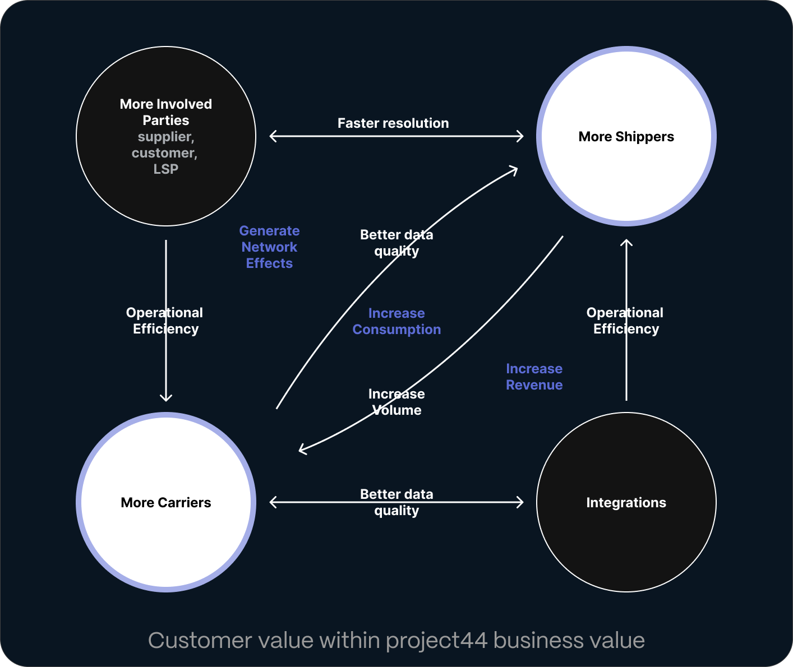There are many problems that can affect both a carrier and shipper: Connectivity issues, Carrier reported, Comparative dates and Null, no movement, These exceptions need to have a human-readable flag/label that means something to the operational user and a recipient who may receive an update about the issue.
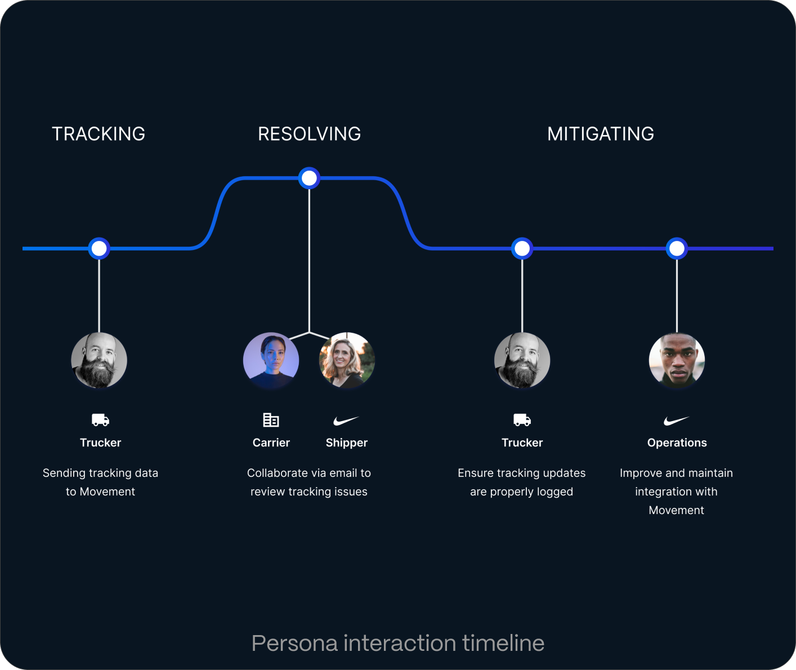The original dashboard was created to help CSMs communicate with our customers with how they were performing on the platform. Customers wanted this information self-serve.
Root Cause Analysis is primarily for transportation analysts from both sides of the logistics space. Shippers who are looking to understand where and why there are breaks in tracking data. Carriers who are looking to understanding what loads they are shipping and how to optimize the lanes they run. They then communicate with each other surface issues.
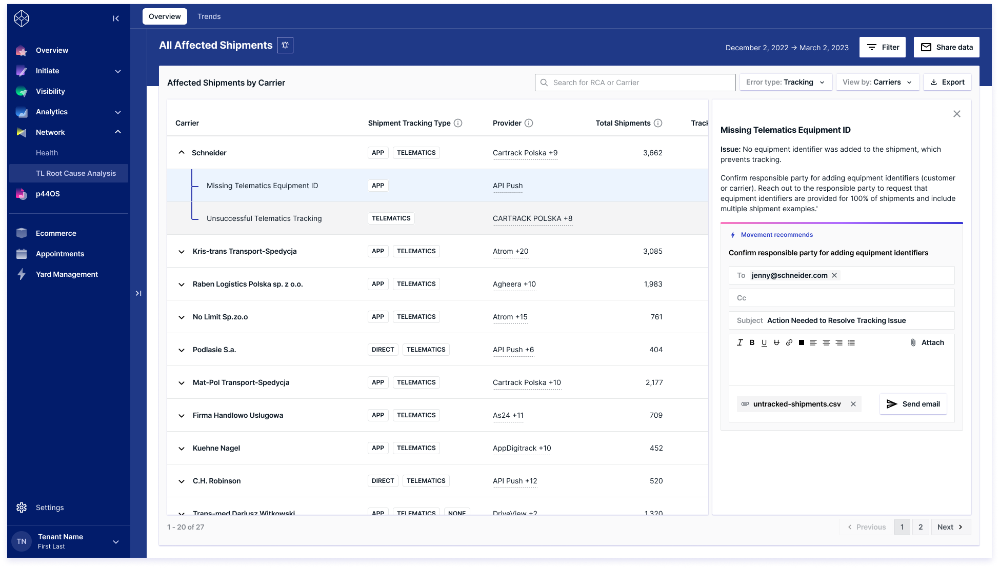 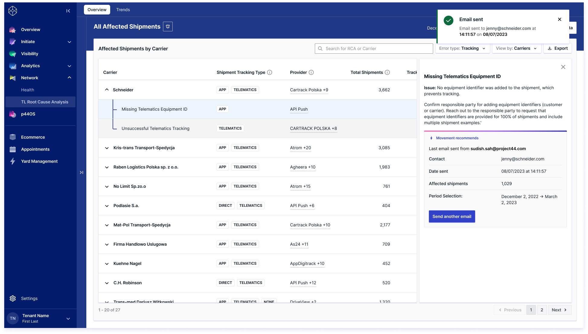Save sets of filters to created saved views to quickly switch between relevant views. Alerts can be set up on each of these views so there can be a digest of affected issues at the cadence required. These can be helpful to send directly to another party or to have a consistent update of the most pressing issues.
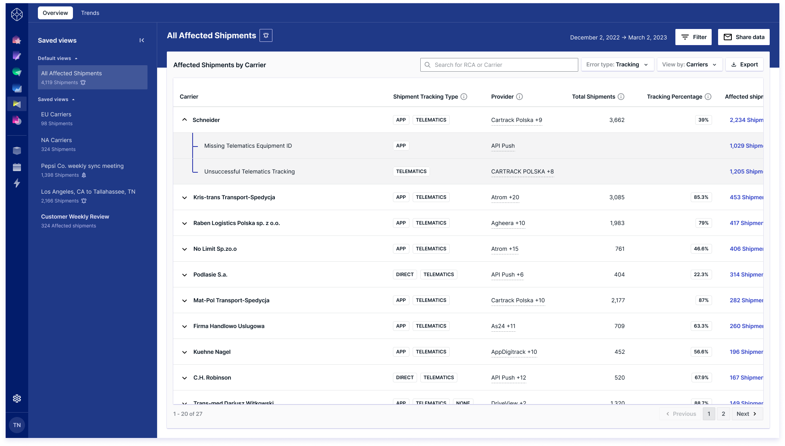 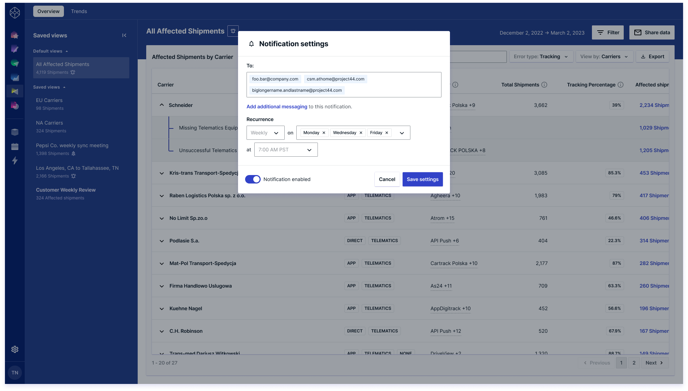RCA also has data visualizations out of the box to further aid in mitigating issues. Highlighting where in the lifecycle of a shipment is the biggest point of failure and highlighting the trend of current issues affecting their shipments.
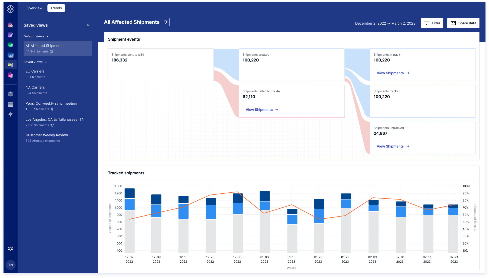 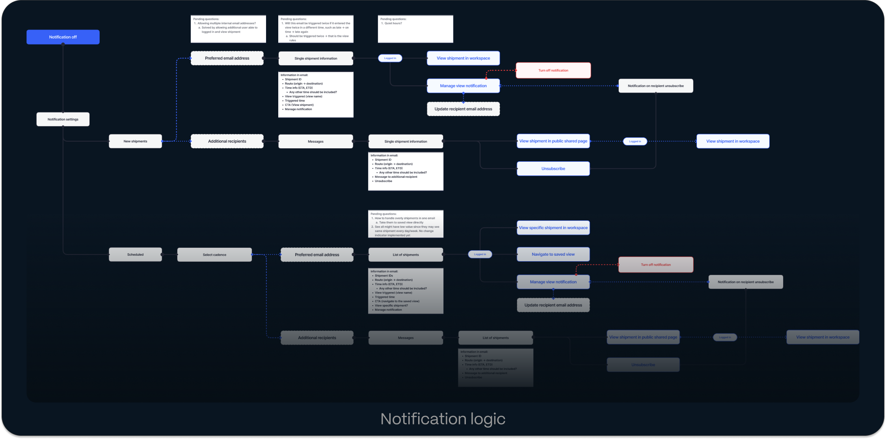 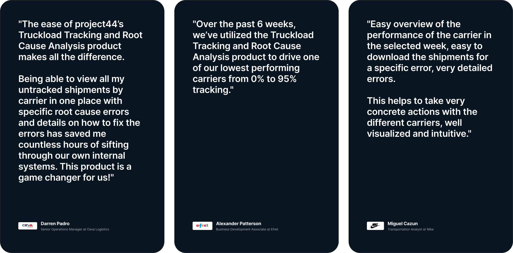The team created a single source of truth for the state of RCA’s in the platform that would surface on affected shipments. This resource is utilized across the entire company from the Network engineering team to CSMs. It helps build the workflows to mitigate issues that we use internally and communicate externally.
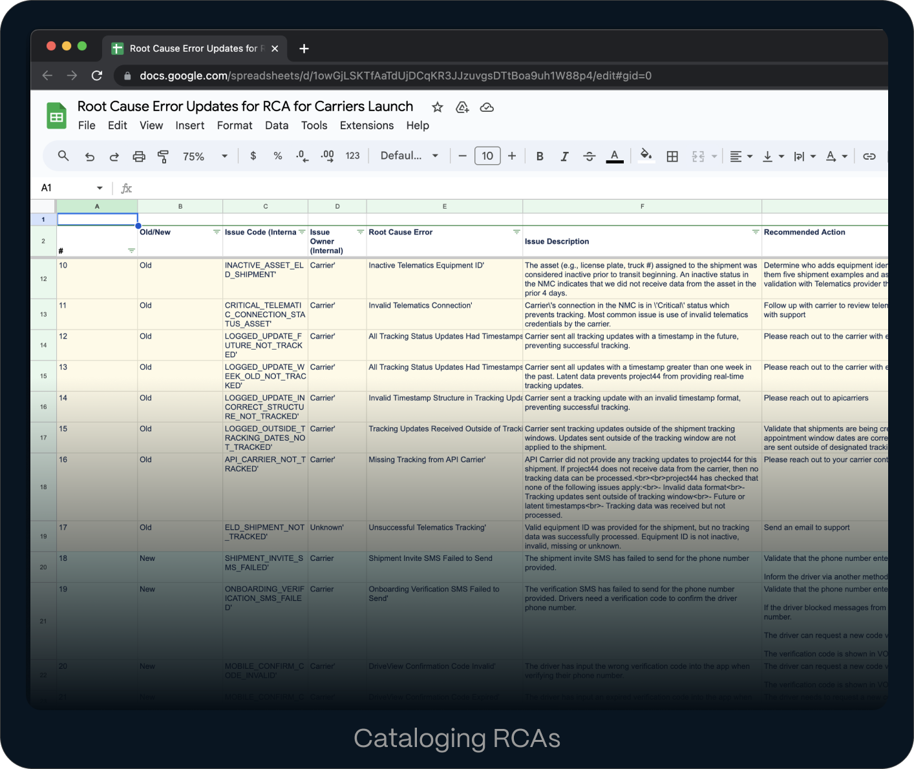 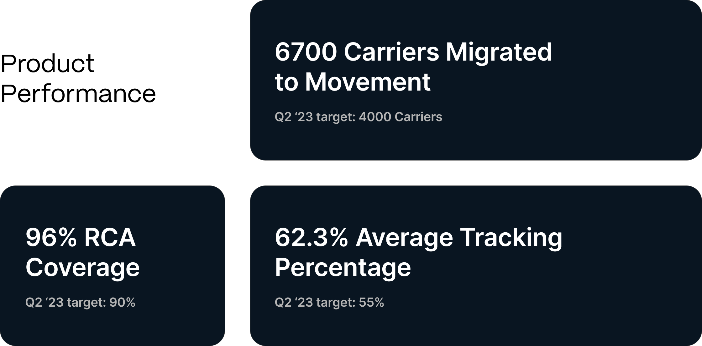Information can flow between both user groups into a centralized platform. Movement empowers the user groups workflows to help both parties communicate with one another.
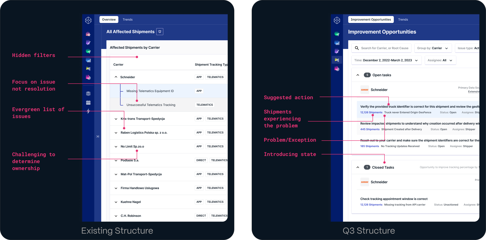The core structure of the UI is there, but core changes have improved the typology of the information displayed. Concentrating now on the task at hand rather than the type of issue helps focus on the work rather than the problem.
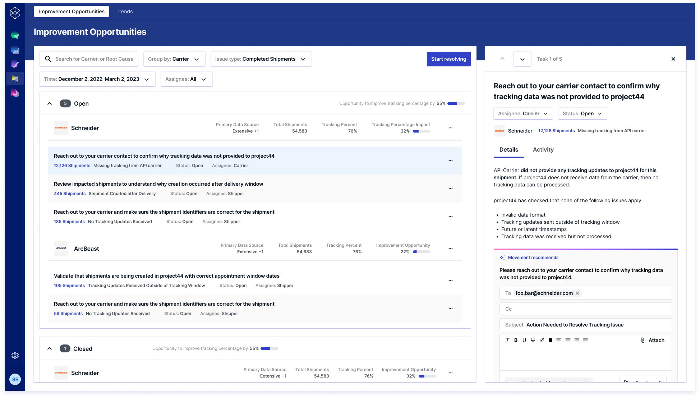 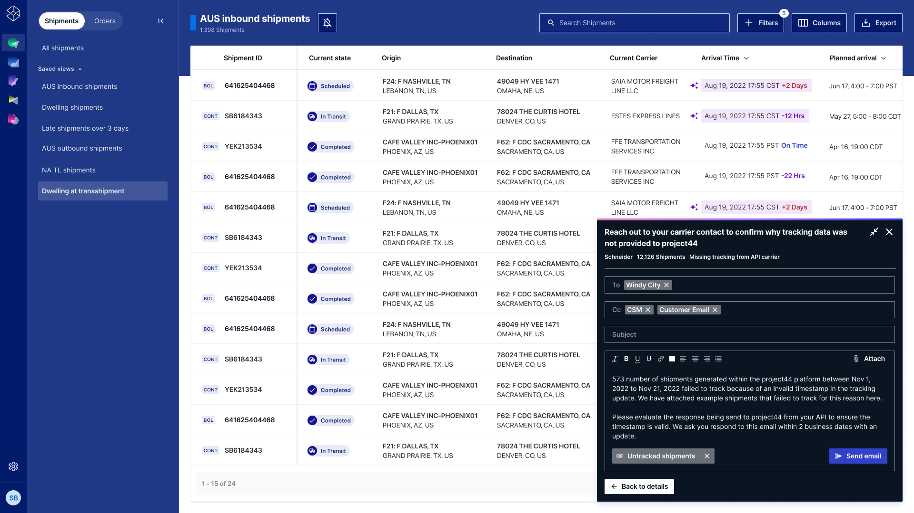